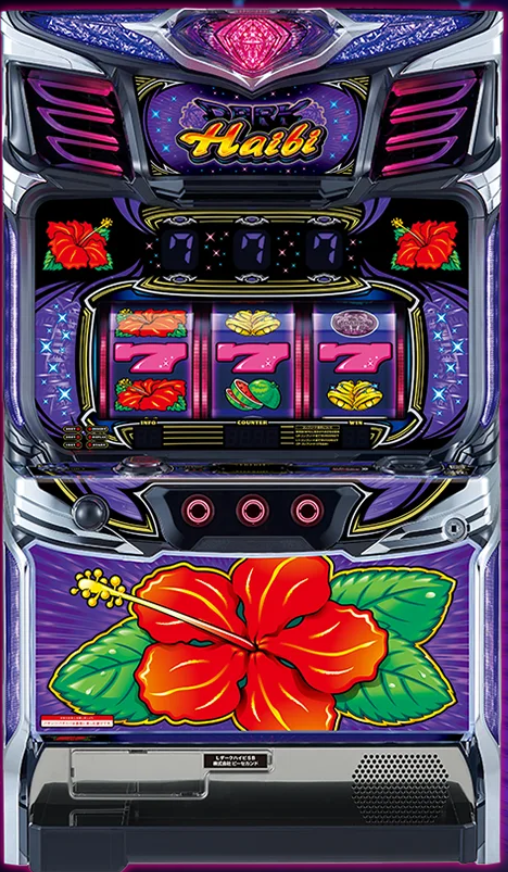

目次

スマート沖スロ ダークハイビDARK HIBISCUS ｜ パイオニア
5段階設定（1/2/4/5/6）の沖スロ系AT機。ダークハイビモードは約95%ループ・平均20連以上。ボーナス後32G目のベル以上で天国チャンス。
ダークハイビ スペック・機械割
| 設定 | BB確率 | RB確率 | 合算 | 機械割 |
|---|---|---|---|---|
| 1 | 1/243.0 | 1/320.4 | 1/138.2 | 97.5% |
| 2 | 1/233.1 | 1/307.9 | 1/132.6 | 99.4% |
| 4 | 1/218.1 | 1/289.7 | 1/124.4 | 102.5% |
| 5 | 1/199.5 | 1/270.0 | 1/114.7 | 106.8% |
| 6 | 1/187.1 | 1/259.1 | 1/108.6 | 110.0% |
遊技時間別・理論差枚数の目安
| 設定 | 機械割 | 差枚数/1h | 差枚数/3h | 差枚数/5h | 差枚数/8h |
|---|---|---|---|---|---|
| 1 | |||||
| 2 | |||||
| 4 | |||||
| 5 | |||||
| 6 |
ダークハイビ 小役確率
| 小役 | 確率 | 備考 |
|---|---|---|
| ベルリプレイ | 1/26 | 裏モードアップ抽選：低確率 |
| チェリー | 1/52 | 裏モードアップ率：約10% |
| スイカ | 1/128 | 裏モードアップ率：約25% |
| ダーク目（合算） | 約1/1024 | 中段揃い＋滑りダーク目＋チェリー付ダーク目 |
ダークハイビ 設定判別ポイント
- ① ボーナス合算確率（最重要）：設定1（1/138.2）〜設定6（1/108.6）と全設定で段階的な差あり。概ね1/250を切る初当たりが設定4以上の基準。
- ② フェザーランプの色（ボーナス終了時）：紫で設定4以上濃厚、虹で設定6濃厚。下表参照。
- ③ ハイビスカスランプフラッシュパターン：白＜青＜黄＜緑＜赤＜紫＜虹の順で設定期待度UP。
- ④ ボーナス中の楽曲変化：「蛍の光」サウンド発生で設定6濃厚。
- ⑤ 獲得枚数表示：「666OVER」や「+66」出現で設定6確定示唆。
フェザーランプ色別 設定示唆
| ランプ色 | 示唆内容 |
|---|---|
| 白 | 基本パターン |
| 青 | 奇数設定示唆 |
| 黄 | 偶数設定示唆 |
| 緑 | 奇数＋高設定示唆 |
| 赤 | 偶数＋高設定示唆 |
| 紫 | 設定4以上濃厚 |
| 虹 | 設定6濃厚 |
ダークハイビ 天井・モード
| モード | 天井G数 | 特徴 |
|---|---|---|
| 通常A〜C | 999G+α | 転落なし |
| 引き戻し・チャンス | 約250G | 早めの当選期待 |
| 天国 | 32G以内 | ボーナス濃厚 |
| 裏天国 | — | ベル約75%でボーナス・転落なし |
| ダーク準備 | 1005G | ダークハイビモード移行チャンス |
| ダークハイビ | — | 約95%ループ・平均20連以上 |
ダークハイビ 打ち方・ダーク目
通常時の打ち方
- 順押し推奨：左リール上段付近に白BARまたはピンク7を狙い、停止形に応じて中・右リールを打ち分ける。
- 変則押し厳禁：通常時に変則押し（ハサミ打ち含む）をすると天井ゲーム数が1G伸びるペナルティが発生します。999G超えてもダーク準備確定とならないケースがあるため注意。
- 押し順ナビ発生時：ナビに従って消化。
ダーク目の停止形
| 種類 | 停止形 | 確率 |
|---|---|---|
| 中段揃いダーク目 | 中段にダーク図柄が揃う | 合算 約1/1024 |
| 滑りダーク目 | リール滑りでダーク図柄が停止 | |
| チェリー付ダーク目 | チェリーとダーク図柄が同時停止 |
遅れ演出
リールスタート時に「遅れ」が発生した場合、ボーナス当選の期待度が大幅にアップします。無音リールスタートは天国モード示唆の演出です。
ダークハイビ 有利区間
| 項目 | 内容 |
|---|---|
| 有利区間リセット条件 | 規定枚数獲得時にリセット |
| リセット後の恩恵 | ダークハイビモード移行率50%以上＋天国移行率約40%＝合算約90%で連チャンモードへ |
ダークカウンタの仕組み
| カウンタ | 加算条件 | 発動条件 |
|---|---|---|
| ダークカウンタA | ボーナス当選時に累計獲得枚数に応じ1〜5pt獲得 | 5pt以上でダークハイビモード移行 |
| ダークカウンタB | ボーナス消化中にチェリー/スイカ成立で1pt獲得 |
ダークハイビ 設定変更・朝一恩恵
| 項目 | 内容 |
|---|---|
| 設定変更後 | 約30%で通常B以上選択、チャンスモード移行率約40% |
| 電源OFF→ON | 前日の状態を引き継ぎ |
ダークハイビ やめどき
| 状況 | 判断 | 理由 |
|---|---|---|
| ボーナス終了後0〜32G | 続行必須 | 天国モード（32G以内ボーナス濃厚）の可能性あり |
| 32G目に小役成立 | 続行 | ボーナス濃厚＋天国移行チャンス |
| 32G消化後（小役なし） | やめてOK | 天国非滞在確定 |
| 通常C以上が濃厚な場合 | 続行検討 | 通常モード間は転落なし |
| 引き戻し/チャンス濃厚時 | 続行推奨 | 天井が約250Gと浅い |
設定判別ツール
ボーナス回数を入力してください。合算確率から各設定の出現しやすさを推定します。
ダークハイビ よくある質問
スマート沖スロ ダークハイビの設定6機械割は？
設定6の機械割は110.0%です。5段階設定（1/2/4/5/6）で設定4（102.5%）から機械割100%を超えます。BIG約306枚・REG約106枚の沖スロ系AT機です。
ダークハイビの天井は何ゲームですか？
通常A〜Cモードでは999G+αが天井です。引き戻し・チャンスモードでは約250G、天国モードは32G以内にボーナス当選します。ダーク準備モードでは1005Gが天井となります。
ダークハイビの設定判別で重要な指標は？
ボーナス合算確率が最重要で、設定1（1/138.2）〜設定6（1/108.6）と明確な差があります。フェザーランプの色やハイビスカスランプのフラッシュパターン（白＜青＜黄＜緑＜赤＜紫＜虹の順で期待度UP）も設定示唆要素です。
ダークハイビのやめ時はいつですか？
ボーナス終了後32G消化後がやめ時です。32G目にベル以上の小役成立でボーナス濃厚（天国移行チャンス）のため、32Gまでは必ず回してください。通常C以上が濃厚な場合は続行を検討しましょう。
ダークハイビモードとは？
約95%ループの最上位モードで、平均20連以上のボーナス連チャンが期待できます。ダーク準備モード経由で突入し、ダーク目出現がトリガーとなります。
ダークハイビの32G以内チャンスとは？
ボーナス後32G目にベル以上の小役（約1/15）が成立するとボーナス濃厚です。ベルなら天国移行チャンス、チェリー・スイカなら天国濃厚、ダーク目ならダークハイビモードのチャンスとなります。
ダーク目とは何ですか？
ダーク目はダークハイビモード突入のトリガーとなる重要役です。中段揃い・滑りダーク目・チェリー付ダーク目の3種類があり、合算確率は約1/1024です。ボーナス後32G目に成立するとダークハイビモード移行チャンス、ダーク準備モード中に成立すると約54%でダークハイビモードへ移行します。
ダークハイビの有利区間リセット後の恩恵は？
有利区間リセット後はダークハイビモード移行率50%以上、天国移行率約40%で、合算約90%の確率で連チャンモードへ移行する強力な恩恵があります。規定枚数獲得時にリセットが発生します。
ダークハイビのスルー回数天井はありますか？
明確なスルー回数天井は公表されていません。ただし通常モード（A/B/C）は上位モードへの転落がないため、通常B以上に滞在している場合は続行する価値があります。ダークカウンタが5pt以上貯まるとダークハイビモード移行の条件を満たします。
ダークハイビの遅れ演出の意味は？
リールスタート時に「遅れ」が発生した場合、ボーナス当選の期待度が大幅にアップします。また無音リールスタートは天国モード示唆の演出です。プレミアム点滅やハイビレトロサウンドも天国モード示唆となります。
ダークハイビの導入日と導入台数は？
導入日は2026年6月22日です。パイオニア製のスマート沖スロで、5段階設定（1/2/4/5/6）のAT機です。
ボーナス中の楽曲変化に設定示唆はありますか？
ボーナス消化中に「蛍の光」サウンドが発生した場合、設定6濃厚の示唆となります。なおボーナス消化中のフェザーランプ色はダークカウンタの蓄積状況を示唆するもので、設定示唆とは異なるので注意してください。
ダークハイビの打ち方で注意すべきことは？
通常時は必ず順押しで消化してください。変則押し（ハサミ打ち含む）をすると天井ゲーム数が1G伸びるペナルティが発生します。左リール上段付近に白BARまたはピンク7を狙い、停止形に応じて中・右リールを打ち分けます。
公式PR動画
（動画情報は準備中です）